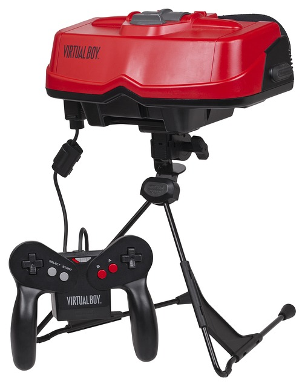

Imagine soaring over hilltops as an eagle, all of this with stunning 3d visuals. How? you may ask. The answer is through virtual reality, but what exactly is virtual reality?
The term Virtual reality was first described in 1987 by Jaron Lanier. It consist of a head set hooked up to a computer, or with it's own built in computer, which displays 3d visuals in first person. Typically there is some sort of input device such as hand grips that simulate hand movements. It began to become main stream after the launch of the Oculus Rift on March 28, 2016. Since then many more virtual reality devices have come to market.
There have been many models of virtual reality since 1987. Here are seven modern devices.
While there have been many recent successes, there have been many failed attempts in the past. One such failure is from a company that the retro community loves. This company is none other than Nintendo.
The Nintendo Virtual Boy was released in 1995. it was developed by Gunpei_Yokoi, the creator of the Game Boy. Although the prospect of a virtual reality system for home use was exciting, the Virtual Boy failed commercially. One reason was the red and black screen. This caused eye strain and was not visually appealing. Nintendo would later revisit the idea of stereoscopic visuals with their 3ds system.